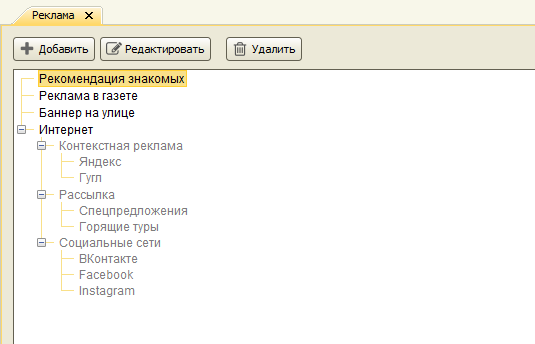
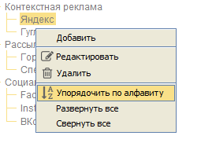

Реклама
Главное меню → Справочники → Реклама
В справочнике "Реклама" хранятся виды рекламы, используемые для продвижения услуг фирмы. При добавлении нового клиента в справочник или создании заявки менеджер может указать, откуда клиент узнал о фирме. Это информация позволит в будущем оценить эффективность разных видов рекламы с помощью отчетов Статистика по рекламе и Эффективность рекламы.
Справочник представляет собой иерархический список, в котором каждый вид рекламы может иметь несколько подвидов. Например, для вида рекламы "Контекстная реклама" могут быть определены подвиды "Яндекс" и "Google".

Добавление, редактирование и удаление групп доступно только пользователям, имеющим роли Администратор, Директор или Главный менеджер.
Перемещение и упорядочивание элементов справочника производится перетаскиванием мышью, так же как в справочнике Группы клиентов.
Контекстное меню вызывается правой кнопкой мыши:

Остались вопросы? Напишите нам на e-mail